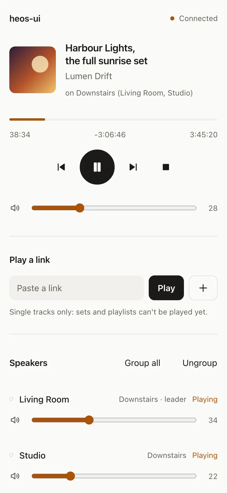

Play a SoundCloud link on your Denon speakers.
heos-ui is a small web UI for Denon/HEOS speakers. Paste a link, pick the speaker, and it plays, including the SoundCloud tracks a speaker can no longer fetch by itself.
brew install ezeql/personal/heos-ui
Then run heos-ui and open localhost:8080,
from this machine or any phone on the network.

What it does
-
Plays links
SoundCloud tracks, direct audio URLs, and anything yt-dlp can read. Most SoundCloud tracks are HLS only now, which the speaker will not follow, so ffmpeg converts them on your machine as they play.
-
Finds the speakers
No IP address to type. Pick which speaker plays, set the volume, mute, and group or ungroup them from the same page.
-
Seeks within a set
The position comes from the speaker itself, and dragging the bar moves within the track, which the HEOS protocol alone cannot do.
-
Knows the track inside a DJ set
heos-nowshows which track of a set is playing right now, andheos-tracklistfinds a set's tracklist from its description or comments. -
Keeps playlists
Lists of links of your own, separate from HEOS playlists, stored in
~/.config/heoscli/and shared with the Python heoscli.
Before you run it on a Mac
- Local Network System Settings → Privacy & Security → Local Network: allow the terminal you run it from. Without it, every connection to a speaker fails.
- Firewall
If it is on, allow incoming connections for
heos-ui: the speaker fetches converted tracks from it. - Stay on A converted track is served by your machine, so it has to stay awake while it plays.